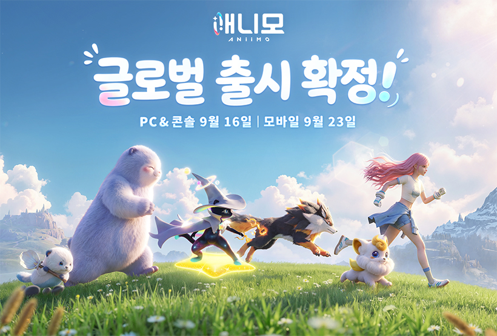
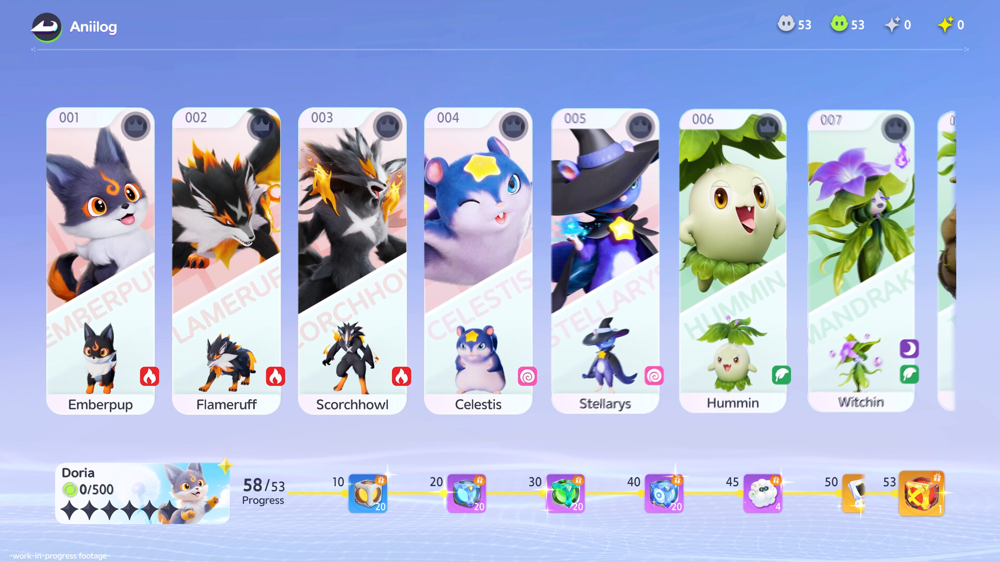
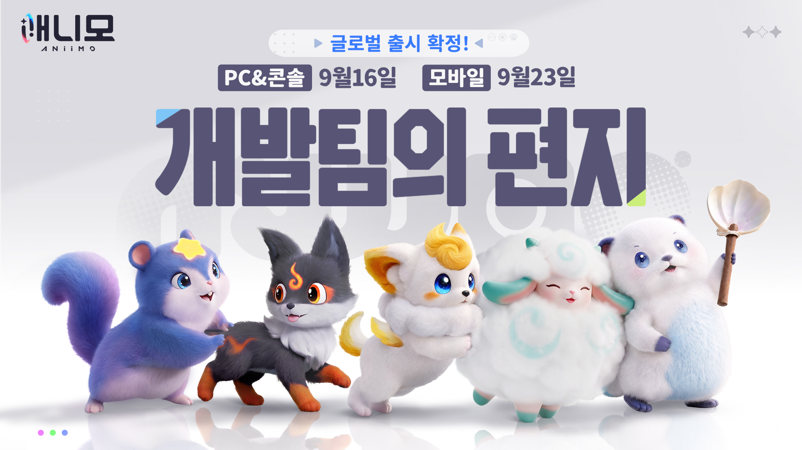
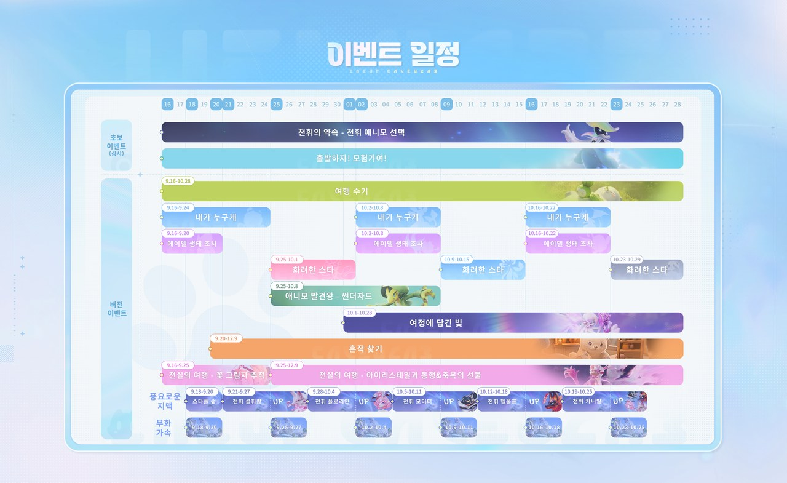

애니모 용어 총정리, 희귀도 평가 차이부터 선천 후천 어빌리티 천휘 스파클 옵시디언까지
애니모가 드디어 오늘, 2026년 9월 16일(수) PC·콘솔로 정식 출시됐어요(모바일은 일주일 뒤인 9월 23일). 저도 아침부터 접속해서 이것저것 눌러보고 있는데, 첫 화면부터 희귀도·평가·어빌리티·천휘·스파클·옵시디언 같은 낯선 용어가 우르르 쏟아지더라고요. 다들 '이게 다 무슨 소리야' 싶으실 것 같아서, 오늘은 애니모 시작할 때 알아두면 좋은 용어를 뜻 → 어떻게 하는지 → 뭐가 좋은지 순서로 한 번에 정리해볼게요. 애니모 공식 홈페이지도 첫 화면부터 오늘 출시 소식으로 꽉 차 있더라고요.

출처: 애니모 공식 사이트
오늘 딱 이 배너처럼, PC·콘솔은 9월 16일 모바일은 9월 23일로 나눠서 열려요.
애니모 희귀도랑 평가, 이 둘부터 안 헷갈리셔야 해요
애니모에서 개체를 나누는 기준은 사실 희귀도랑 평가, 완전히 다른 두 가지예요. 희귀도는 그 개체가 '어떤 종류의 특별한 개체인가'를 겉모습·출현 방식으로 나눈 거고, 평가는 '타고난 능력이 얼마나 좋은가'를 선천 어빌리티로 매긴 등급이에요.
| 구분 | 기준 | 종류 |
|---|---|---|
| 희귀도 | 겉모습·출현 방식 | 일반 · 엘리트 · 천휘 · 스파클 · 옵시디언 |
| 평가 | 선천 어빌리티 수치 | 샤이닝 스타 > 탁월한 재능 > 잠재력 우수 > 다소 미숙 |
둘은 따로 붙어요 — '스파클 + 샤이닝 스타'인 개체도 있고, '일반 + 다소 미숙'인 개체도 있는 거죠. 베타 테스트 때는 색이 다른 개체(이로치)를 '샤이닝'이라고 불렀는데, 그때 최고 평가 이름도 '샤이닝 스타'라 이름이 겹쳐서 다들 헷갈려하셨대요. 정식판에서는 이로치 쪽 이름이 '스파클'로 정리되면서, 베타 때 있었던 '빛나는 애니팟'도 지금은 '스파클 애니팟'이라고 불러요.

이미지: 스팀 스토어 페이지
도감(Aniilog)에서 개체를 이렇게 카드로 확인할 수 있어요.
평가는 뭐로 정해지나요 — 선천 후천 어빌리티
평가 등급은 선천 어빌리티 수치로 정해져요 — 애니모를 잡거나 부화시킬 때 이미 정해지는, 포켓몬으로 치면 개체값 같은 타고난 능력치예요.
- 후천 어빌리티는 잡은 뒤 육성으로 올리는 수치예요.
- 게임톡·인벤 인터뷰에 따르면 높은 등급(평가)일수록 능력치에서 유리하고, 이미 잡은 종류라도 더 좋은 능력치를 가진 개체를 새로 얻을 수 있대요 — 그래서 샤이닝 스타가 좋은 이유가 바로 이거예요.
- 정식판 공식 공지에는 '야외에서 9/9, 10/10처럼 높은 어빌리티를 지닌 애니모의 출현 확률을 상향'했다는 내용도 있었어요 — 이 숫자가 정확히 뭘 가리키는지는 아직 확인이 더 필요해서, 아래 8번 섹션에 따로 정리해둘게요.
- 성격(MBTI 유형 표시)도 따로 있어서, 같은 평가라도 성격에 따라 능력치가 달라져요 — 전투용으로 고를 땐 성격까지 같이 봐야 해요.
- 낮은 평가 개체를 키웠어도 60레벨 이하라면 잠재력 발현을 언제든 초기화하고 썼던 육성 아이템을 돌려받을 수 있고, 잠재력 열매는 계승·이전도 가능해요(공식 100066).
그러니까 육성할 개체를 고를 땐 평가(샤이닝 스타 여부)부터 확인하는 게 먼저겠네요.

출처: 애니모 공식 개발팀의 편지
위에서 짚은 어빌리티·천휘 관련 공식 수치가 대부분 이 개발팀의 편지에서 나온 내용이에요.
포획 확률, 애니팟 종류부터 봐야 해요
포획 확률은 애니팟 종류에 따라 배수가 다르게 붙어요. 공식 확률 안내 페이지 수치를 그대로 표로 옮겨볼게요.
| 애니팟 | 배수 |
|---|---|
| 애니팟 | ×1 |
| 슈퍼 애니팟 | ×1.5 |
| 스피드 · 트래킹 · 얼티밋 애니팟 | ×2 |
| 챔피언 애니팟 · 스파클 애니팟 | 반드시 성공 |
| 빅화이트볼 | ×2(대량 출현 목표 조종 시 ×6) |
확률을 올리거나 깎는 조건은 정말 다양한데요, 표로 정리하면 이래요.
| 조건 | 배수 | 적용 조건 |
|---|---|---|
| 뒤에서 던지기 | ×1.5 | 전투 밖·일반 애니팟만(빅화이트볼 제외) |
| 수면·기절·식사·만취·미끼 | ×2 | — |
| 숙면·꿀 채집 | ×100 | — |
| Break | ×1.5 | — |
| 대상 HP 0%~100% | ×2~×0.8 | ★전투 중에만 |
| 은신 | ×0.5 | — |
| 경계·응시 | ×0.9 | — |
| 나보다 11레벨 이상 높음 | ×0.8~×0.1 | — |
포획 확률은 화면에 실제로 표시되니 참고하시면 됩니다. 엘리트는 살아 있을 땐 포획 확률이 0%고, 전투 불능 상태로 만들어야 6%가 붙습니다 — 그러니까 엘리트는 '쓰러뜨린 뒤 잡는' 개체고, 일반 보스는 아예 포획이 안 돼요.

이미지: 스팀 스토어 페이지
이렇게 애니팟을 겨눠서 포획을 준비하는 화면이라, 하단 슬롯에서 어떤 애니팟을 쓰느냐가 확률에 바로 영향을 줘요.
천휘, 지맥부터 열어야 나와요
천휘 애니모를 만나려면 그 구역의 지맥 결정 무리부터 활성화해야 해요. 흐름을 정리하면 이래요.
- 맵에 표시된 지맥 결정 무리를 찾아 활성화해요 — 텔레포트 지점이 열리고, 그 구역에 등장하는 애니모·수집도도 함께 확인돼요.
- 그 자리에서 '생태 육성'을 진행해요.
- 구역별로 따로 쌓이는 '천휘 에너지'를 채워요.
- 천휘 에너지가 다 차면 '천휘 현상'이 일어나고, 그때 천휘 애니모를 포획할 수 있어요.
공식 확률 안내에 나온 '지맥 정수로 육성 시' 수치는 이래요.
| 항목 | 수치 |
|---|---|
| 천휘 현상 즉시 발동 확률 | 3% |
| 1회 생태 육성 시 천휘 에너지 획득 | 480 |
| 확정 발동까지 필요한 천휘 에너지(최소 보장) | 10,500 |
포획 중 '행운의 일격'이 뜨면 아이템 보상은 물론 그 지역의 천휘 에너지까지 오르고, 확률로 천휘 현상이 바로 발생하기도 해요(공식 100066). 정식판에서는 여기서 세 가지가 달라졌는데요.
- 생태 육성을 몇 번 하든 천휘 현상 기본 확률이 동일해지면서, 초반에 에너지가 부족해 출현 확률이 낮아지던 문제가 사라졌어요(최소 보장은 그대로 유지).
- 대량 출현 품질에 영향을 주던 '공물' 시스템이 삭제돼서, 생태 육성마다 늘어나는 천휘 에너지 양이 일정해졌어요.
- 시즌 한정으로만 나오던 천휘 애니모의 출현 로직이 전면 개편돼서, 출현 조건이 더 명확해졌어요(공식 100066).
천휘는 지역마다 나오는 종류가 정해져 있고, 일반 개체와 외형·기술 이펙트가 다른 특별한 형태예요 — 다만 종마다 성능까지 다른지는 공식·매체 어디에도 능력치 차이 언급이 없어서 여기서는 단정하지 않을게요. 쉽게 얻는 법도 있는데, 초급 탐구자로 승급할 때 천휘 형태 애니모 1종을 골라 받을 수 있고(공식 100118), 캠핑카 파견에서도 확률로 천휘 특성을 지닌 알을 얻을 수 있어요(공식 100066).

출처: 애니모 공식 정식 출시 공지
아래쪽 '풍요로운 지맥' 줄을 보면, 기간별로 확률이 오르는(UP) 천휘 애니모가 표시돼 있어요.
스파클, 색이 다른 개체를 말해요
스파클은 색이 다른 개체(이로치)를 가리키는 희귀도예요. 공식 확률 안내에 스타일별 확률까지 나와 있어요.
| 경로 | 일반 | 찬란한 | 그림자 |
|---|---|---|---|
| 스파클 애니팟으로 오픈월드 포획 | 99% | 1% | 0% |
| 스파클 애니팟으로 옵시디언 알 제외 부화 | 99% | 1% | 0% |
| 스파클 애니팟으로 옵시디언 알 부화 | 99% | 0% | 1% |
| 스파클 인장 사용 시 변경 | 99% | 0.5% | 0.5% |
| 스파클 광채 사용 시 변경 | 99% | 0.5% | 0.5% |
스파클 애니팟은 포획이 반드시 성공하는 데다, 잡히는 개체가 스파클 스타일에 평가까지 샤이닝 스타로 고정되거든요(공식 100066). 사실상 제일 좋은 포획 도구라 '꼭 갖고 싶은 개체'에만 아껴서 쓰시는 걸 추천드려요. 정식 출시 이벤트에 참여하면 스파클 애니팟·챔피언 애니팟·빅화이트볼도 받을 수 있으니 챙겨두시면 좋아요(공식 100118).
옵시디언, 제일 귀한 희귀도예요
옵시디언은 샤이닝 스타 어빌리티와 특별한 외형을 한 번에 가진 가장 귀한 희귀도예요(공식 100066) — 희귀도랑 평가를 한 번에 다 챙기는 셈이죠. 만나는 법은 생태 육성으로 '대량 출현'을 활성화했을 때 일정 확률로, 그리고 오픈월드에서도 일정 확률로 등장하는데 정확한 수치는 공개돼 있지 않아요. 옵시디언 알도 따로 있고, 스파클 애니팟으로 부화시키면 앞 표에서 본 것처럼 1% 확률로 그림자 스파클 스타일이 나와요.

이미지: 스팀 스토어 페이지
필드에서 이렇게 흔하게 마주치는 개체 대부분이 '일반' 희귀도예요.
엘리트 · 일반, 필드 기본 개체예요
일반은 필드에서 흔히 보이는 보통 개체고, 엘리트는 그보다 강한 필드 개체예요. 엘리트는 앞서 말씀드린 대로 쓰러뜨린 뒤 6% 확률로 포획되고, 행동력을 소모하는 엘리트 전투에서 이기면 장착 아이템을 드랍해요. 드랍 확률은 내 타이틀 등급에 따라 갈린답니다.
| 타이틀 | 레어 | 에픽 | 레전더리 |
|---|---|---|---|
| 특별 신입 · 학생Ⅰ · 학생Ⅱ | 100% | 0% | 0% |
| 학생Ⅲ · 탐구자Ⅰ · 탐구자Ⅱ | 75% | 25% | 0% |
| 탐구자Ⅲ · 탐험가Ⅰ | 0% | 80% | 20% |
출시 첫날이라 아직 확실하지 않은 부분도 있어요
- 옵시디언을 진화시키면 옵시디언 외형이 그대로 유지되는지
- 천휘 생태 육성을 열기 위한 선행 조건이 정식판에서도 그대로인지
- 스파클 인장·스파클 광채를 얻는 곳, 성격 글자별로 오르는 능력치
- '9/9, 10/10 높은 어빌리티' 표기가 정확히 어떤 수치를 가리키는지
- 후천 어빌리티의 실제 상한과 필요 재료(정식판 기준)
출시 첫날이라 아직 확실하지 않은 부분은 확인되는 대로 이 글에 업데이트할게요.
애니모 용어 자주 묻는 질문
Q. 스파클이면 무조건 샤이닝 스타인가요?
스파클 애니팟으로 잡은 경우에만 어빌리티가 샤이닝 스타로 고정돼요. 그 외 경로(스파클 인장·알 부화 등)로 나온 스파클 개체는 평가가 개체마다 다를 수 있어요.
Q. 천휘 애니모, 처음부터 하나 받을 수 있나요?
네, 초급 탐구자로 승급할 때 천휘 형태 애니모 1종을 직접 골라 받을 수 있어요(공식 100118). 이벤트 일정표의 '천휘의 약속 - 천휘 애니모 선택'이 바로 이 상시 이벤트예요.
Q. 천휘랑 스파클, 뭐가 다른가요?
천휘는 외형과 기술 이펙트가 다른 특별한 '형태'고, 지역마다 나오는 종류가 정해져 있어요. 스파클은 색이 다른 개체(이로치)를 가리키는 희귀도고요. 둘은 서로 다른 기준이라 헷갈리지 않게 구분해서 보시면 돼요.
애니모 용어 총정리
정리하면 희귀도(일반·엘리트·천휘·스파클·옵시디언)는 겉모습·출현 방식이고, 평가(샤이닝 스타·탁월한 재능·잠재력 우수·다소 미숙)는 선천 어빌리티로 정해지는 능력 등급이에요. 둘은 따로 붙는다는 것만 기억해두셔도 앞으로 애니모 글 읽기가 훨씬 편해지실 거예요. 오늘 출시했으니 도감부터 한 번씩 열어보시고, 이 글 챙겨두고 천천히 시작해보시길 바라요.
✔ 애니모 같이 보기 좋은 내용
· 애니모 포지션 5종 뭐부터 키워야 하나, 초반 육성 우선순위 잡는 법
· 애니모 알쟁탈전 홀로그램협동전 정리, 정식출시 앞두고 달라지는 점
· 애니모 도감 속성치 비교 — 출시 전 공식 위키로 확인한 9종 능력치
참고한 곳
· 애니모 공식 확률 안내
· 애니모 공식 정식 출시 공지
· 애니모 공식 개발팀의 편지